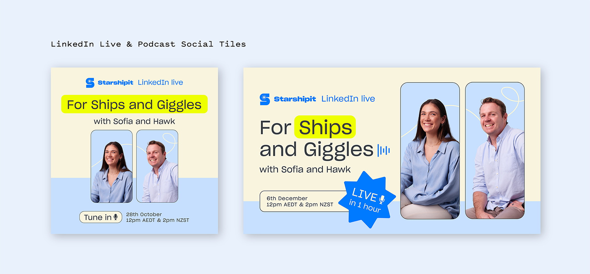
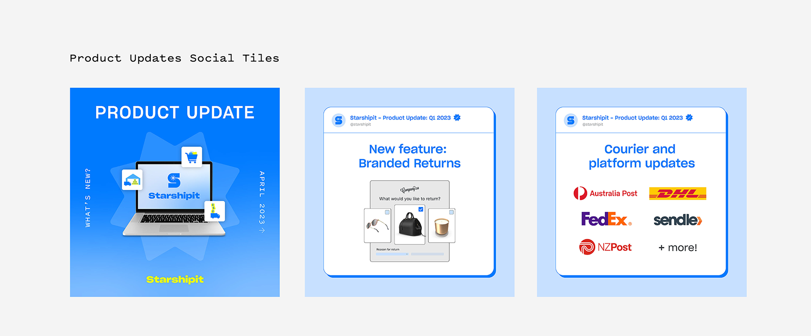
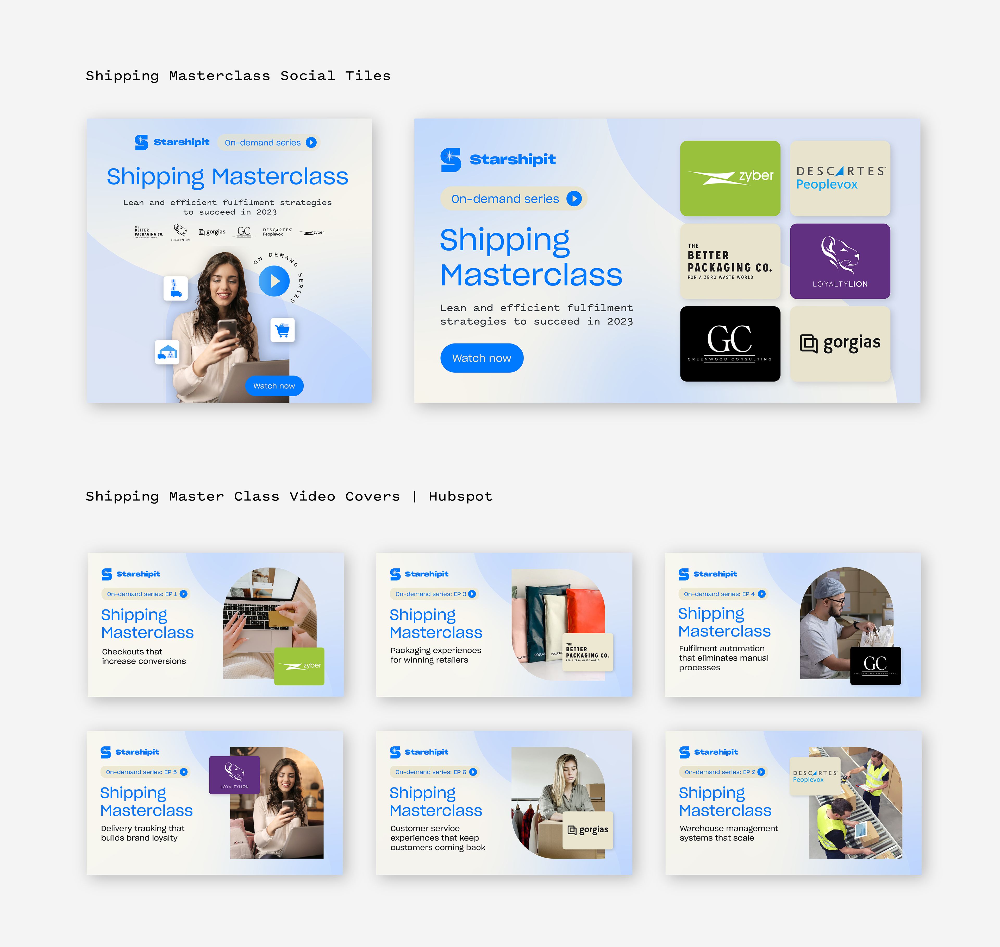
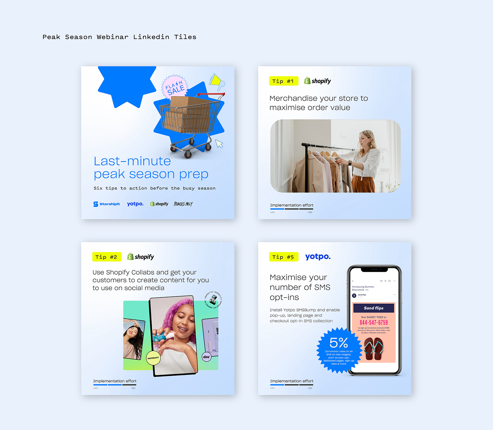

Motion and content project
Starshipit Video, Animation & Social Media
Summary
I created motion, video, and campaign content for Starshipit across product updates, paid social, webinars, and wider marketing activity.
The output ranged from tutorial and newsletter videos through to animated adverts and supporting assets designed to keep the brand useful, visible, and engaging.
Animated paid social media adverts displayed on Linkedin, Facebook, Instagram, and YouTube.
Monthly Starshipit product update videos and tutorial videos.
Programs used:
Details
Animated paid social media adverts displayed on Linkedin, Facebook, Instagram and Youtube
Monthly Starshipit product update video and tutorial videos



